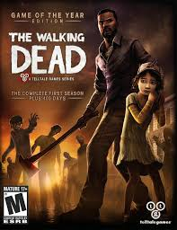

The Walking Dead: The Complete First Season, también conocida simplemente
como The Walking Dead: Season One,
es una aventura gráfica episódica basada en la serie de
cómics de Robert Kirkman.
Fue desarrollada y publicada por Telltale Games y lanzada
inicialmente en 2012.
Disponible en una amplia variedad de plataformas, incluyendo PC,
PlayStation 3, Xbox 360, y más tarde
para PlayStation 4, Xbox One, Nintendo Switch, y
dispositivos móviles,
la temporada completa consta de cinco episodios que sumergen a los
jugadores en el inicio del apocalipsis zombi.
.webp)
The Walking Dead: The Telltale Series - The Final Season es la última
temporada de la serie interactiva de Telltale Games basada en The Walking Dead. En esta ocasión,
y con un salto temporal con respecto a la última temporada,
asistiremos al desarrollo y el
viaje de una nueva Clementine, que ahora es una superviviente feroz y capaz.
Refugiada en
una escuela, deberá continuar protegiendo al huérfano AJ, mientras sigue defendiéndose de las
continuas amenazas que la asedian.
Las decisiones difíciles, por supuesto, estarán
presentes en el juego.
Telltale ha introducido en las mecánicas jugables un nuevo sistema de
cámara por sobre el hombro, que ofrece más libertad para explorar los escenarios,
que serán
más detallados y grandes que en ocasiones anteriores, y contará con nuevas escenas de combate
espontáneo.